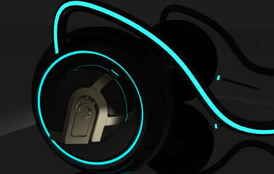
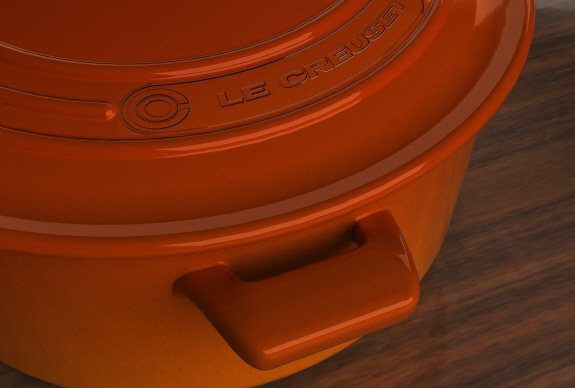
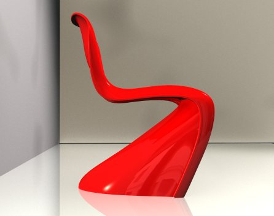
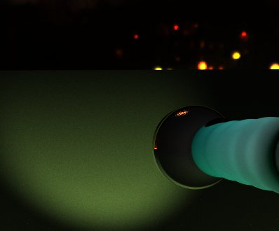
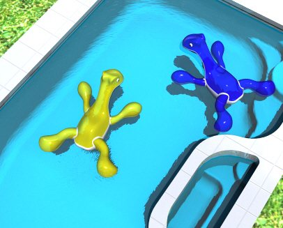
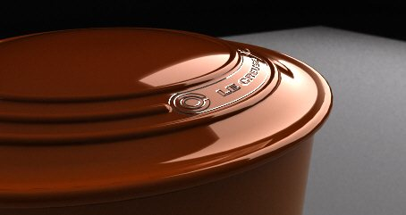

Type
Digital Modeling
Year
2013 – 2014
Tools
Rhino
Rendering
Category
Digital
Overview
A set of small modeling exercises made while learning Rhino, each one chosen because it was hard to draw. They are less finished projects than practice in how to describe a surface precisely and how to light it so it reads as real.
In this set: a Verner Panton S-chair (the glossy red cantilevered form is almost entirely one continuous curved surface); Daft Punk headphones with glowing blue-green rings; a Le Creuset Dutch oven, where the rim and lid are mostly highlights; a flashlight; a basin and running tap in which the water had to be convincing; and a dinosaur riding toy. Other models from the same period, including a door knob, a pot holder, a desk and an earring, aren't pictured here.






